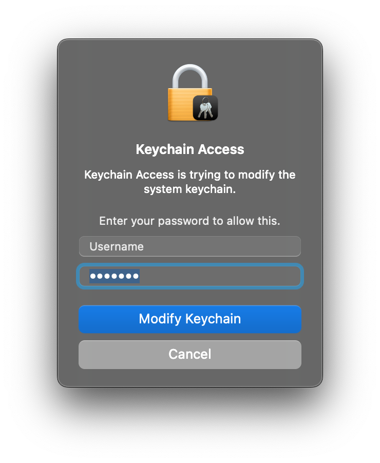
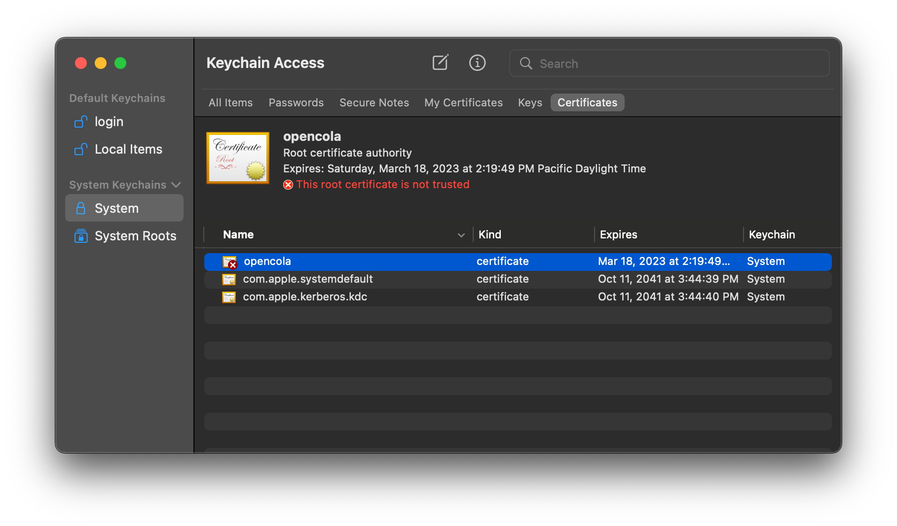
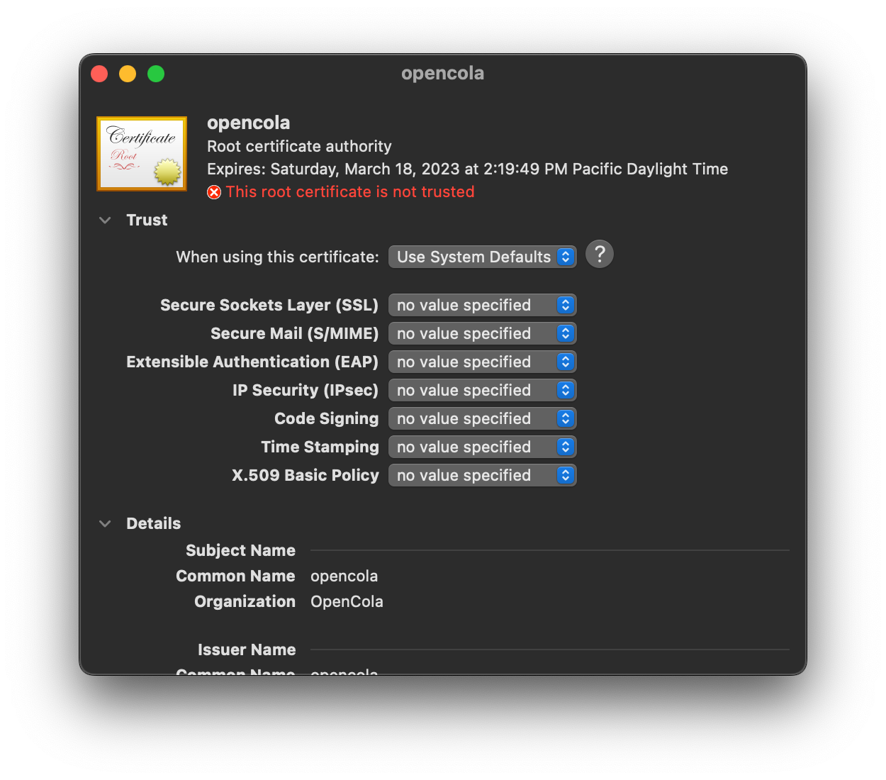
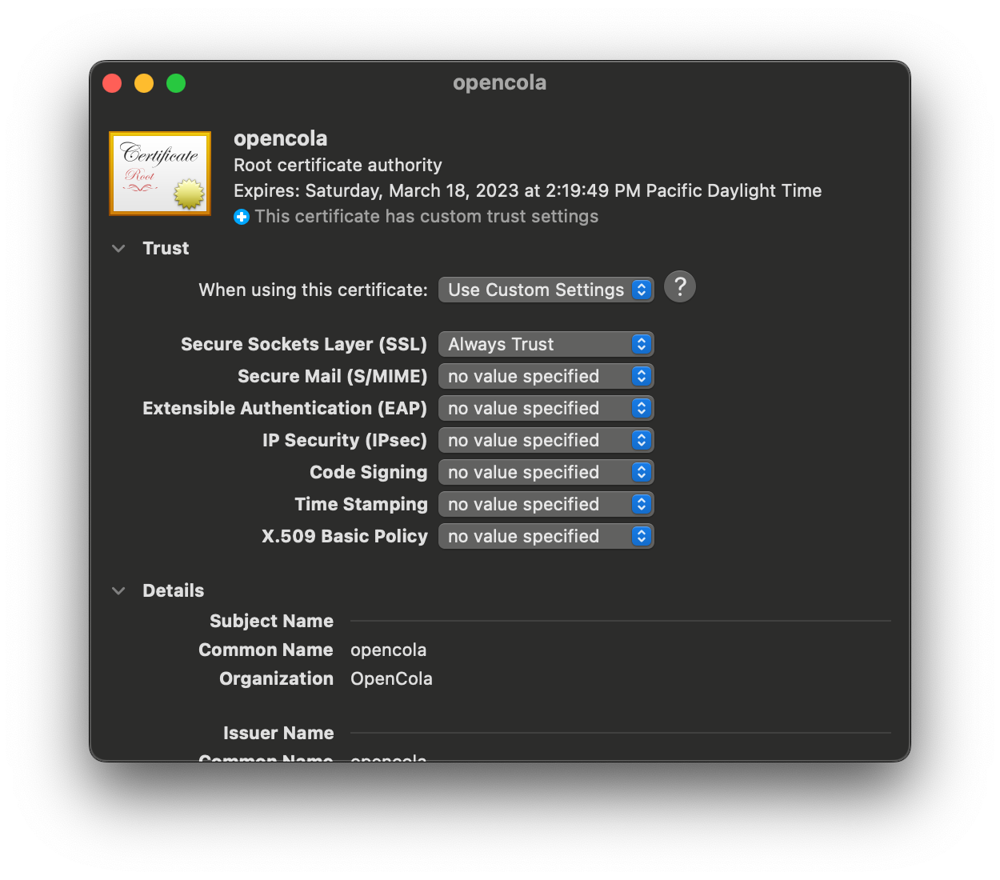
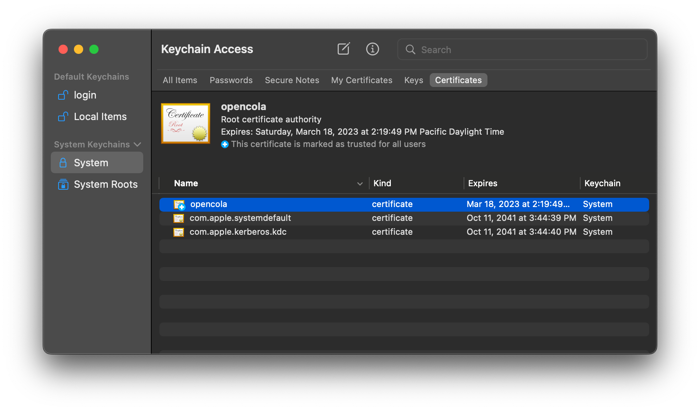

At the prompt, enter your password and hit enter:
You will see your keychain with an added opencola certificate (not trusted):
Double click on the certificate to open the certificate details and expand the trust section:
Change the value for Secure Sockets Layer (SSL) to Always Trust:
Close the certificate, at which point you will be asked to enter your password again. Your keychain should look like:
Close Keychain Access and click Continue